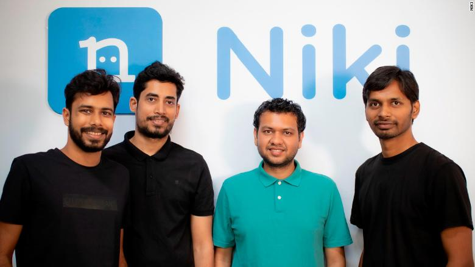

The multilingual voice app helping Indians shop online
In a country where 1.3 billion people speak 22 officially recognized languages and hundreds of dialects, communication can be a problem, especially online. Despite a rapid rise in the number of Indian internet users who don't speak English as a first language, 60% won't buy online due to language barriers, according to a 2017 report from accounting firm KPMG and Google (GOOG). One big challenge is using English keyboards for local languages, the report says. Niki, a voice-enabled e-commerce platform, is trying to solve this, providing a virtual assistant that lets people use voice commands to do their shopping, pay utility bills and book tickets online. Users speak to the app in their preferred language, requesting products or services. Niki then presents buying options from its suppliers.
The company's target market is people who don't live in cities and do not speak English. "The internet was supposed to be an economic leveler," Niki CEO and co-founder Sachin Jaiswal tells CNN Business. But he says only a small proportion of Indians are using internet services for digital transactions, "creating a huge gap between those who can participate in the growing digital economy and those who can't." "With Niki we are bridging the gap," he adds. In the northern Indian state of Rajasthan, the app has been used for more than 10 million online transactions since 2018, by 550,000 households. Niki is currently available in Hindi, Bengali, Tamil and English, a common second language in some areas of India. The company is looking to introduce seven more languages, and hopes to expand to 10 more states by mid 2022, Jaiswal says.
Thanks to a machine learning algorithm, Niki is able to understand variations and dialects within a language with increasing accuracy, says Jaiswal. When the app first launched, the algorithm had a 65% accuracy rate, fed by the data from 5 million conversations. Now, with a bank of over 250 million conversations, Niki can process voice commands with 95% accuracy, he says.
The app differs from typical online marketplaces by limiting the number of buying options. Rather than replicating a supermarket, offering many similar products, Niki is more like a local store, presenting a few quality-controlled items from vetted suppliers, says Jaiswal. When users speak to Niki in their native language, the chatbot speaks back, imitating the interaction with a neighborhood shopkeeper. This appeals to the "culture of service" that many Indian consumers are used to, says Jaiswal. The app is free to download, with suppliers paying Niki a commission of between 2% and 25% to list on the app. Users can pay digitally or by cash on delivery. Most users prefer to pay in cash, says Jaiswal, but he expects this to change as digital banking and consumer trust in online transactions rises. The pandemic has helped to accelerate the shift to digital payments. Consulting firm Accenture says in India, 67 billion transactions worth $270 billion are expected to shift from cash to cards and digital payments by 2023. "Covid-19 has turbo-charged digital adoption at a pace no bank could have predicted," Sulabh Agarwal, Accenture's global lead for payments, tells CNN Business. "The pandemic will permanently change how consumers shop and pay for products as they prioritize convenience above all else," he says, adding that AI-enabled services, like messaging apps and voice-enabled devices, will support this transition.
Startups like Niki, as well as the likes of Slang Labs, which provides a multilingual voice assistant to Indian e-commerce companies, and Voxta Communications, which builds voice bots that can understand multiple Indian languages, could help the trend. "We are unlocking the internet economy," says Jaiswal, "for people living in small towns of India, who don't speak English and have a very different cultural mindset and approach than the typical consumer."